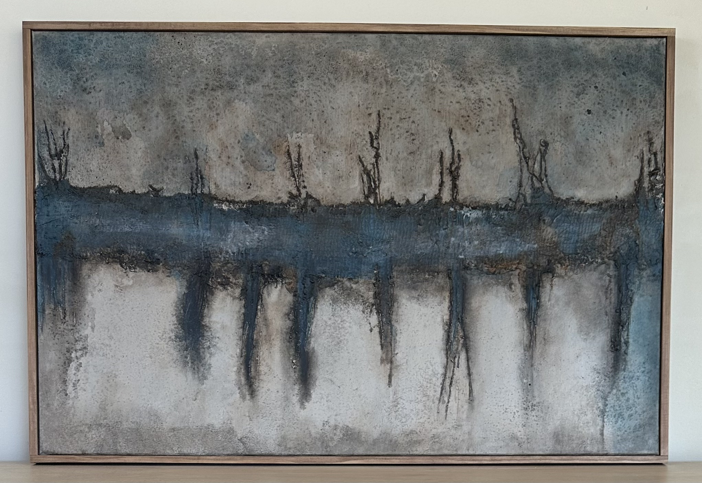
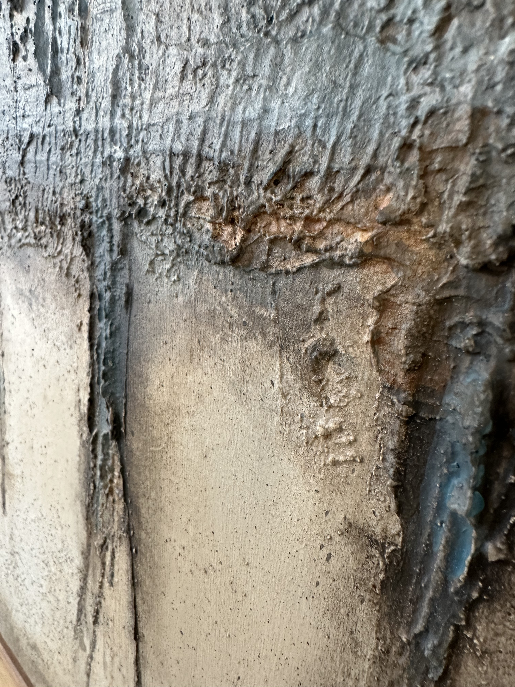
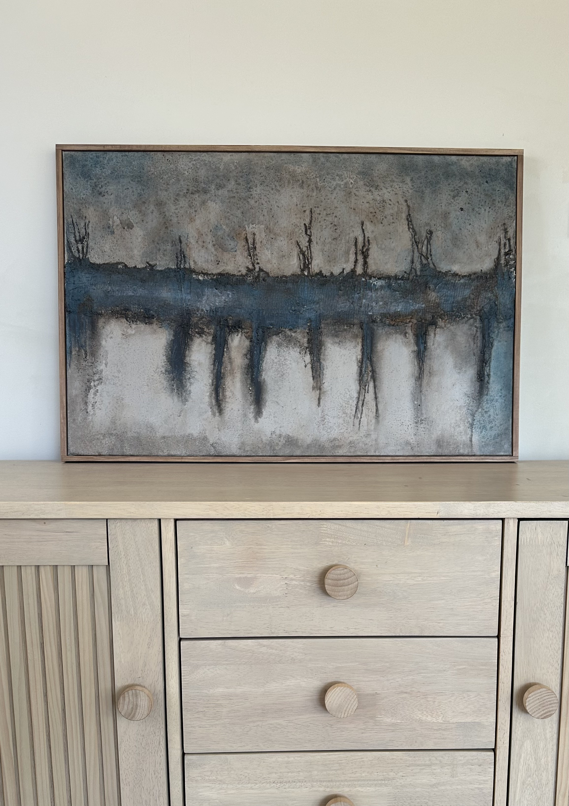

The Dependant Rhythm
Mixed media on board | 900 × 600 mm | Framed
AVAILABLE
$695 AUD
Enquire about this work


The Dependant Rhythm explores the tension between repetition and disruption — the ways we move through life in patterns that feel familiar, even as they shift, fracture and change.
Built through layers of texture, sand, plaster, washes and staining, the work combines muted blue, charcoal and earthy neutrals with dark descending marks and weathered surfaces. Earlier layers remain visible beneath the final finish, creating a sense of history, erosion and quiet persistence.
The central textured band acts almost like a pulse through the piece — holding together areas that feel at once connected, interrupted and dependent on one another.
Additional views

